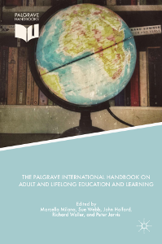
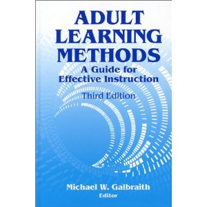
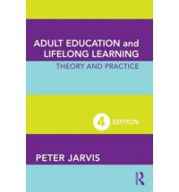

- Vermandere, L., Schroyens, K, & Pelleriaux, K. (2017). Het volwassenenonderwijs.
- Boeren, E., & Nicaise, I. (2009). Wie neemt deel en waarom?
- Hämäläinen, R., Cincinnato, S, Malin, A., & De Wever, B. (2014). VET workers’ problem-solving skills in technology-rich environments: European approach.
- Hämäläinen, R., De Wever, B., Malin, A., & Cincinnato, S. (2015). Education and working life: VET adults' problem-solving skills in technology-rich environments.
- Hämäläinen, R., De Wever, B., Nissinen, K., & Cincinnato, S. (2017). Understanding adults’ strong problem-solving skills based on PIAAC
- Knowles (2005). An andragogical process model for learning. (H6 Knowles)
- Knowles (2005). Andragogy in practice. (H7 Knowles)
- Jarvis, P. (2010). Distance education and open learning. (H10 Jarvis)
- Jarvis, P. (2010). Assessing and evaluating. (H11 Jarvis)
- Jarvis, P. (2010). Perspectives on learning theory. (H5 Jarvis)
- Jarvis, P. (2010). Theoretical perspectives on teaching. (H9 Jarvis)
- Nicaise, I. (2003). Levenslang leren herverdelen. (H1 LLL 2002)
- Baert, H. (2003). Een nabeschouwing. (Slothoofdstuk LLL 2002)
Planning lessen (vrijdagvoormiddag)
- 16 feb: Les 1
- 23 feb: Les 2
- 02 mrt: Les 3
- 09 mrt: Les 4
- 16 mrt: Les 5
- 23 mrt: geen les
- 30 mrt: Les 6
|
- 06 apr: geen les
- 13 apr: geen les
- 20 apr: Les 7
- 27 apr: Les 8
- 04 mei: Les 9
- 11 mei: geen les
- 18 mei: Les 10*
|
Indienen portfolio
- Deadline: 18 mei
- Portfolio zowel digitaal als op papier indienen
Opdracht: presentatie paper
- Per duo
- 1 wetenschappelijk artikel (hoofdstuk boek, ev. tijdschriftartikel)
- Presentatie van 10 minuten
- Elk 5 minuten
- Context + inhoud (kernachtig) + link met LVV en de cursus
Opdracht: presentatie paper
- Aangeraden boeken waaruit hoofdstuk kan worden gekozen (zie Minerva)
- Milana et al. (2018)
- Rubenson (2011)
- Galbraith (2004)
- Jarvis (2010)
- VLOR (2014)
- Losse artikels
Adult Learning and Education

Adult Learning and Education

Adult Learning Methods
- Galbraith, M.W. ed. (2004). Adult Learning Methods: A Guide for Effective Instruction. Malabar, Florida: Krieger Publishing Company.[link naar worldcat.org]

Adult Education and Lifelong Learning
- Jarvis, P. (2010). Adult education and Lifelong learning. Theory and Practice (4th ed.). London: Routledge. [link naar Google books]

Adult Education and Lifelong Learning

Opdracht: presentatie paper
- Op aanvraag en mits korte motivering ook andere voorstellen mogelijk
- Artikels in tijdschriften
- Hoofdstukken uit wetenschappelijke boeken
- Topics
Opdracht: presentatie paper
- Topics: bvb. gerelateerd aan
- Leer- en instructiemethodes
- Leerprocessen en evaluatie
- Theoretische achtergronden
- Relevante praktijken
- Online en open adult education
Opdracht: presentatie paper
- Topics: bvb. gerelateerd aan
- Internationale en/of historische achtergronden
- Motivatie van volwassenen
- Theoretische achtergronden
- Deelname van volwassenen
- Situatie in Vlaanderen
Selectie Topic
- Link met LVV + topics hierboven
- Korte motivatie
- Géén hoofdstuk dat reeds in de reader zit
Planning en voorbereiding opdracht
- Groepen van twee maken
- Bekijken welke topics je interesseren
- Kijk inhoudstafels na
- Check de artikels (diagonaal lezen!)
Planning en voorbereiding opdracht: fase 2
- Online intekenen voor paper?
- Random selectie op basis van voorkeuren?
- Of zelf verdelen?
- Tegen of tijdens de les volgende week?
Elementen van de opdracht
- Schrijf samenvatting van het artikel/hoofdstuk
- Gebruik template (zie minerva)
- Maak een presentatie voor de groep
- Gebruik webslides of template (zie minerva)
- Layout mag anders, gebruik zelfde elementen
- Maximum 10 minuten (5 elk)
Samenvatting
- Gebruik template (zie minerva)
- Hou je aan maximum pagina's!
- Opslaan in pdf en word
- Opladen pdf via dropbox in minerva (als bewijs)
- Opladen in de mappenstructuur van de documenten in de groep studenten (volgt later)
- Leerstof (les, slides, samenvatting)
Feedback
- Groepjes die presenteren in bepaalde week
- Elkaar feedback geven
- Afspraak met de docent
- Kort voor de presentatie (woensdagen)
- Inventariseren bij toewijzen topics aan groepen
Feedback
- Lezen van minstens twee andere teksten (te verdelen)!
- Afhankelijk van aantal groepjes
- Inhoudelijke en vormelijke feedback op presentatie
- Feedback op inhoud artikel
- Ook mogelijk: feedback op samenvatting
- Inhoudelijk en/of vormelijk
- Zelf te organiseren!
Planning presentaties (vrijdagvoormiddag)
- (02 mrt: Les 3)
- 09 mrt: sessie 1
- 16 mrt: sessie 2
- 23 mrt: geen les
|
- 30 mrt: sessie 3
- 20 apr: sessie 4
- 27 apr: sessie 5
- 04 mei: sessie 6
- (11 mei brug)
- [18 mei: Les 10]
|
Planning feedback (woensdagnamiddag)
- 07 mrt: sessie 1
- 14 mrt: sessie 2
- (21 mrt)
- 28 mrt: sessie 3
|
- 18 apr: sessie 4
- 25 apr: sessie 5
- 02 mei: sessie 6**
|
Tweede opdracht: presentatie van instelling/organisatie.
- Groepjes per 4 (per 2 duo's)
- Voorstellen voor interessante instellingen/organisaties
- Samenstellen verscheiden lijst
- Voor elke presentatie
- Context en achtergrond
- Situering in het veld van LVV
- Link met theorie of literatuur uit de cursus
Tweede opdracht: presentatie van instelling/organisatie
- Afhankelijk van de instelling, kan eventueel:
- Observatie van de leeromgeving
- Interview met verantwoordelijke
- Interview met lesgever
- Interview met student/participant
- Desk research kan ook, doel is brede veld belichten
Tweede opdracht: presentatie van instelling/organisatie
- Presentatie van 10 minuten
- Samenvatting van maximaal 2 bladzijden
- Template (bij documenten op Minerva)
Algemene afspraken
- Kijk aankondigingen op Minerva regelmatig na
- Kijk ook de slides na
- Algemene vragen die iedereen ev. aanbelangen graag via forum
- Bij missen les: kijk slides na, contacteer medestudenten via forum
Opdracht Boeren en Nicaise
- Zie elders in de slides
- Max 2 slides
- PDF – bestand
- Ten laatste volgende week donderdag om 13u00
- Uploaden via Dropbox Minerva
Examen
- Mondeling examen met schriftelijke voorbereiding
- 6, 7, en 8 juni
- bepaalde datum
- Helft van de punten
- Andere helft: portfolio (inclusief de twee opdrachten)
{kind=link}